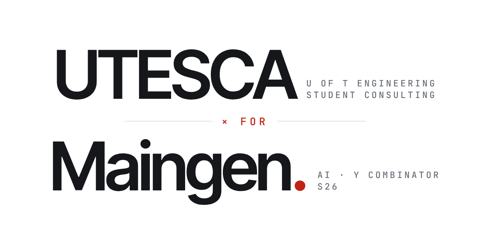

AI CONSULTING ENGAGEMENT — UTESCA × MAINGEN (Y COMBINATOR S26)
UTESCA × MAINGEN
Co-Head Mechanical Engineer on a University of Toronto Engineering Student Consulting Association engagement for Maingen, a Y Combinator S26 AI company — building the environment in which their operations agent is evaluated against a human operator.
Scope of Work
SUMMARYA consulting engagement delivered through UTESCA, the University of Toronto Engineering Student Consulting Association, for Maingen — a Y Combinator S26 company building AI agents for real-world operations. As Co-Head Mechanical Engineer I own the weekly execution of the mechanical side of the engagement and bring shop-floor judgement to a software problem.
The Benchmark Environment
DELIVERABLEThe core deliverable is an evaluation environment built around a real recurring operations decision: what the agent can observe, what actions it can take, the constraints it must respect, and how its decisions are scored against the baseline set by a real human operator making the same call.
| Observation space | What the agent is allowed to see when the decision comes up |
| Action space | The decisions it can make, and the ones it cannot |
| Constraints | Material, drawing and approval limits taken from how the work is actually done |
| Scoring | Measured against the human operator's decisions on the same cases |
Mechanical Expertise
DUTIESAlongside the environment work, I provide mechanical expertise on fabrication jobs moving through the operations pipeline — from drawings through to the shop floor — and resolve what blocks them: missing materials, drawings or approvals. Those decisions are what the baseline is built from.
Tools & Skills
CAPABILITYConfidentiality
NOTEMaingen's operations data, pipeline and evaluation results are theirs. This sheet describes the role and the method, not the numbers.